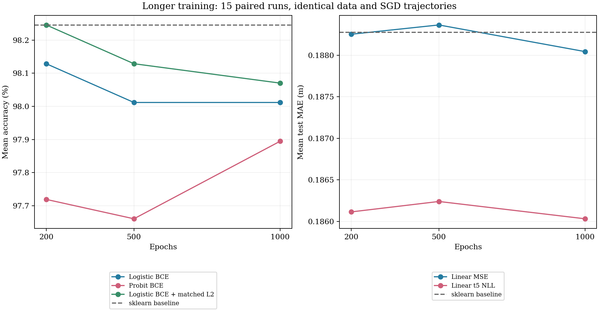

固定数据划分种子 [0, 1, 7, 21, 42]，mini-batch 打乱种子 [0, 1, 42]，每个模型每个训练轮数有 15 次成对比较。每条轨迹训练到 1000 轮，并保存第 200、500、1000 轮结果，共 75 条训练轨迹和 225 个检查点。不同检查点共享相同的前期更新，不做交叉验证，不按测试分数选择 epoch。
只增加训练轮数。分类 batch=64、初始 lr=0.05；回归 batch=32、初始 lr=0.03；momentum=0。保持原来的 lr0/(1+epoch_index/100) 衰减、训练集标准化、float64、概率 clip=[1e-6,1-1e-6]、梯度 norm clip=5。分类使用全部 455 条训练数据、114 条测试数据；回归使用 85/22 条。
sklearn logistic baseline 为 L2、C=1；回归 baseline 为 OLS。除作业要求的四个模型外，保留匹配 sklearn 正则强度的 L2 logistic 诊断模型。训练目标差分别参照无正则 sklearn logistic、匹配 L2 sklearn logistic、OLS、SciPy t5 BFGS；probit 未设数值最优参考。无正则 logistic 参考是数值拟合结果，并不保证可分数据存在有限最优参数。

| Epochs | 模型 | Baseline 均值 | PyTorch 均值 | 平均差值 | 平均训练目标 | 平均目标差 |
|---|---|---|---|---|---|---|
| 200 | Logistic BCE | 98.25% | 98.13% | -0.12 pp | 0.070624 | 7.062e-02 |
| 200 | Probit BCE | 98.25% | 97.72% | -0.53 pp | 0.059933 | — |
| 200 | Logistic BCE + matched L2 | 98.25% | 98.25% | +0.00 pp | 0.078702 | 8.996e-03 |
| 200 | Linear MSE | 0.188275 | 0.188254 | -0.000021 | 0.054601 | 3.440e-06 |
| 200 | Linear t5 NLL | 0.188275 | 0.186114 | -0.002161 | 1.000074 | 1.222e-06 |
| 500 | Logistic BCE | 98.25% | 98.01% | -0.23 pp | 0.064407 | 6.441e-02 |
| 500 | Probit BCE | 98.25% | 97.66% | -0.58 pp | 0.056029 | — |
| 500 | Logistic BCE + matched L2 | 98.25% | 98.13% | -0.12 pp | 0.074634 | 4.927e-03 |
| 500 | Linear MSE | 0.188275 | 0.188366 | +0.000091 | 0.054600 | 2.418e-06 |
| 500 | Linear t5 NLL | 0.188275 | 0.186240 | -0.002035 | 1.000074 | 7.216e-07 |
| 1000 | Logistic BCE | 98.25% | 98.01% | -0.23 pp | 0.061371 | 6.137e-02 |
| 1000 | Probit BCE | 98.25% | 97.89% | -0.35 pp | 0.053930 | — |
| 1000 | Logistic BCE + matched L2 | 98.25% | 98.07% | -0.18 pp | 0.072988 | 3.282e-03 |
| 1000 | Linear MSE | 0.188275 | 0.188045 | -0.000230 | 0.054599 | 1.372e-06 |
| 1000 | Linear t5 NLL | 0.188275 | 0.186031 | -0.002243 | 1.000073 | 3.984e-07 |
准确率越高越好、MAE 越低越好。平均值来自 15 次配对运行；同一划分的三个种子共享测试集，划分之间也有样本重叠，因此没有把这些运行当作独立样本进行显著性检验。
Logistic BCE：200→1000 轮，平均训练目标从 0.070624 变为 0.061371；平均测试指标从 98.13% 变为 98.01%，变化 -0.12 个百分点。
Probit BCE：200→1000 轮，平均训练目标从 0.059933 变为 0.053930；平均测试指标从 97.72% 变为 97.89%，变化 +0.18 个百分点。
Logistic BCE + matched L2：200→1000 轮，平均训练目标从 0.078702 变为 0.072988；平均测试指标从 98.25% 变为 98.07%，变化 -0.18 个百分点。
Linear MSE：200→1000 轮，平均训练目标从 0.054601 变为 0.054599；平均测试指标从 0.188254 变为 0.188045，变化 -0.000209 m。
Linear t5 NLL：200→1000 轮，平均训练目标从 1.000074 变为 1.000073；平均测试指标从 0.186114 变为 0.186031，变化 -0.000083 m。
分类测试集每多错一条相差约 0.88 个百分点。训练损失与测试指标需要分开判断：训练更充分并不保证测试准确率更高或 MAE 更低；不带 L2 的 logistic 与默认 sklearn baseline 的训练目标也不同。MSE 与 OLS 的目标相同，应结合训练目标差判断是否已充分优化。
学习率衰减保持不变，1000 轮的末轮学习率约为初始值的 1/11。该对照衡量的是增加训练轮数的效果，不同时改变学习率或按测试集寻找最佳停止点。
runs.csv 保存逐次指标、训练目标与梯度；aggregate.csv 为汇总；parameters.json、test_predictions.csv、split.csv 可重算预测和指标；training_history.csv 保存每 10 轮训练目标；validation.json 保存同轨迹第 200 轮复现检查及独立指标核验。